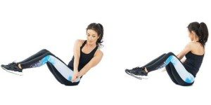

Welcome to Ejercicios de abdominales efectivos
Los 5 mejores ejercicios para trabajar abdominales
2021.06.26 12:38Es TENDENCIA Vacunación España Toque de queda Confinamiento domiciliario Test antígenos Relojes Cómo cuidar la barba Roscón de Reyes Siguenos en
MiCuenta
Inicio Mi perfil Mis Suscripciones Mis intereses Newsletters y alertas Ofertas Noticias guardadas Autores seguidos Mi archivo Concursos y eventos Contacto Cerrar sesiónMis alertas
Estilo Living Protagonistas Gourmet Rodar Vídeos Síguenos en Moda Belleza Relojes y complementos Salud y fitness Ocio Tecnología Casas Top Home Negocios NieveSalud y fitness
Los 5 mejores ejercicios para trabajar abdominales
Aprende a ejercitarlos correctamente para conseguir un 'six pack' perfecto
El sixpack se consigue a base de esfuerzo - Instagram Actualizado 10/05/2019 09:49h. María Aguirre Colaborador Seguir Leer después CompartirHemos tratado en diversos temas el ejercicio desde un punto de vista más general, centrándonos más en variables como el tiempo disponible para ejercitarse , las metas y objetivos a nivel físico, el tipo de entrenamiento y por supuesto la disciplina. Sin embargo, todavía no habíamos profundizado en el trabajo específico de un grupo muscular, algo que al fin y al cabo es uno de los pilares que debemos trabajar a la perfección para fortalecer a partir de él nuestro cuerpo de una manera saludable, responsable y eficaz.
El abdomen es una de las zonas más trabajadas y que más esfuerzo requiere - © GtresTodos los grupos musculares son importantes para la salud del cuerpo, pero como en cualquier otro mecanismo existen piezas que soportan una responsabilidad mayor en el engranaje del mismo. Como por ejemplo los abdominales que son, sin duda alguna, una zona especialmente sensible porque es la encargada de equilibrar nuestro cuerpo, ayudando en cierto modo a todos los demás grupos musculares a soportar el esfuerzo y el desgaste derivado de la actividad física del tipo que sea.
Los abdominales mal hechos y sus leyendas
Además, son probablemente el grupo que más impacto genera en la mente de las personas a nivel estético, por lo que tienen una atención añadida para casi todas ellas. El problema es que, como explica el entrenador personal Ángel Díez Gimeno , “el abdomen es uno de los grupos musculares peor trabajados en el gimnasio”. Quizá por ese exceso de atención que se centra sobre ellos, se ha extendido una idea equivocada acerca de cómo trabajarlos: “Muchas repeticiones para definir la zona , notar quemazón en series gigantes de muchas repeticiones y con descansos cortos, o el uso del ‘crunch’ abdominal (el ejercicio clásico de abdominales que todos tenemos en nuestra cabeza) de forma indiscriminada exigiendo grandes flexiones de columna y cuello con malas posturas y técnica”, son creencias y rutinas populares equivocadas, tal y como cuenta Díez Gimeno.
Ver fotos
Por su parte, Gonzalo Martínez Salmerón , coach manager de la sala Reto 48 , destaca la importancia de variar los ejercicios, algo que no suele ser habitual en las personas que no se asesoran por un experto. “Aunque hagas trabajo de abdomen diariamente, revisa que vayas variando de ejercicios que trabajen abdomen inferior un día ; otro, el superior; otro los oblicuos, con el objetivo de trabajar en conjunto toda la zona abdominal y no cargarlos”, argumenta. Es importante en cualquier rutina de trabajo el descanso muscular tanto como el trabajo de los mismos, al igual que es importante otra variable que muchas veces se olvida, la intensidad de los ejercicios y, sobre todo, mantenerla durante toda la serie. Por eso es más interesante realizar series cortas más explosivas y también más efectivas, “todo ello acompañado de descansos entre series (60-120 segundos) que permitan mantener dicha intensidad”, añade Díez Gimeno.
Fundamental es también recalcar algo que siempre hacemos cuando hablamos de fitness: la importancia de la alimentación para el éxito del entrenamiento. Como concluye Ángel Díez Gimeno, “el entrenamiento de abdomen va a trabajar y mejorar tu musculatura abdominal, pero no va a hacer que pierdas grasa; eso depende de tu dieta, actividad diaria y de generar un balance energético acorde”. O dicho de otro modo, menos técnico pero igual de ilustrativo, en palabras de Martínez Salmerón: “En esto no vale la tableta de chocolate como inspiración” . No iba a ser tan fácil de conseguir el mítico six-pack
Ejercicios concretos de abdominales hay muchos, y conocer una buena muestra de ellos es lo que hace más sencillo trabajarlos todos por igual y evitar abusar de los mismos, lo que conlleva generalmente problemas físicos, sobre todo en la zona lumbar. Recopilamos a continuación cinco de ellos, menos conocidos que los típicos ‘crunch’ , todos diferentes entre sí, recomendados entre los dos expertos consultados:
Índice Top
1. Planchas 2. Press pallof 3. Sit up 4. La rueda abdominal 5. Stir the potPlanchas
Un clásico, la plancha - InstagramEs un ejercicio muy interesante porque evita forzar la espalda con torsiones y rotaciones que sí implican otros abdominales. Además, es uno de los ejercicios con más modificaciones, dependiendo del nivel físico y del objetivo que tengas. Pueden ser estáticas, más sencillas, o dinámicas , en las que se complica más el trabajo y requieren más esfuerzo.
Es fundamental que la posición del cuerpo sea alineada con los antebrazos y punteras apoyados. Presta atención extra al glúteo, el cual tendemos a sacarlo del eje para facilitar el ejercicio, lo que es un error técnico.
Press pallof
Cómo realizar un press pallof - InstagramEste ejercicio recomendado por Díez Gimeno requiere de una polea en el gimnasio o al menos de una goma elástica para hacerlo en cualquier lugar donde entrenes.
Tiene diversas variantes pero el movimiento estándar implica en contraer el abdomen con el cuerpo situado de perfil a la polea/goma, y estirar los brazos desde el pecho y aguantar la posición hasta recoger de nuevo los brazos. La clave de la dureza recae en la resistencia que le pongas al mismo.
Sit up
Es importante trabajar correctamente los abdominales - InstagramEs uno de los trabajos de abdominales que más se utiliza, sobre todo en las rutinas HIIT , ya que es una posta clásica dentro de los circuitos de alta intensidad. Consiste en levantar en bloque toda la parte superior del cuerpo de forma completa sin utilizar apoyos.
Los brazos sirven de equilibrio y balance para ayudar en el movimiento. Las piernas, por su parte, pueden estar semiflexionadas o estiradas, siendo este último caso el que añade más dureza.
La rueda abdominal
Así se trabaja con la rueda - InstagramEs un artilugio muy interesante para trabajar las abdominales sin forzar la espalda ya que se trata de recoger y estirar utilizando el movimiento de la pequeña rueda que se sujeta con las manos agarrándola de las sujecciones que tiene a ambos lados.
Los brazos permanecen estirados en todo momento y la clave es conseguir bajar todo lo posible el eje durante la fase de extensión, siempre de forma controlada y con el abdomen contraído.
Stir the pot
Ayúdate de una pelota de pilates - InstagramProbablemente es el menos conocido de los cinco. Se trata de situarse en posición de plancha sobre una pelota de pilates, contrayendo el abdomen y apoyando las punteras. El movimiento es muy sencillo desde esta posición inicial: gira los codos como si estuvieras agitando una olla gigante, de ahí el nombre del ejercicio.
Haz series en función del relo j, no de las repeticiones (30-60 segundos).
Temas
Instagram Gimnasia Deportes Salud Ejercicio Gimnasia de mantenimiento Fitness María AguirreColaborador Seguir
Periodista de moda y lifestyle. Melómana, deportista y adicta al chocolate. De la cosecha del 86.
Comentarios AnteriorEl primer restaurante subacuático de Europa acaba de abrir sus puertas
SiguienteEl traje granate, nuevo invitado de tu armario de primavera
Te puede interesar
Siete «apps» para ponerse en forma
Cómo puedes cambiar tu cuerpo en un año
Crosspilates, un entrenamiento que promete el éxito
Summum x nokia
Cómo elegir un móvil que perdure en el tiempo por menos de 400€
Top Summum
Lo + visto Lo último 1ABC Premium Un galeón de súper lujo para 200 personas con ocho cubiertas
2Perfumes: aprende a usarlos para dejar huella
3Así es el primer hotel cinco estrellas de lujo todo incluido de España
4La rutina más potente para entrenar en la playa y mantenerte en forma en vacaciones
5Los relojes que llevan los protagonistas de las series del momento
6Sakuma, el método que promete un cuerpo escultural con solo 4 minutos de ejercicio al día
7¿Cuánto dinero tiene el hombre con más mansiones del mundo?
8Los 3 cortes de pelo más estilosos para cambiar de look este verano y acertar
9Los 3 ejercicios que Chris Hemsworth recomienda para unos brazos de hierro como los suyos
10Verano 2021: #Afterwork Summum: Planes de lujo para inaugurar el verano en Madrid
1#Afterwork Summum: Planes de lujo para inaugurar el verano en Madrid
2ABC Premium Un galeón de súper lujo para 200 personas con ocho cubiertas
3¿Cuánto dinero tiene el hombre con más mansiones del mundo?
4ABC Premium Se subasta un diamante de 15 millones que se puede pagar con criptomonedas
5Cómo lucir el bañador que puso de moda Cristiano y no parecer un hortera de chiringuito
6Los relojes que llevan los protagonistas de las series del momento
7Los 3 cortes de pelo más estilosos para cambiar de look este verano y acertar
8ABC Premium El reloj de diamantes más pequeño del mundo
9Así es el primer hotel cinco estrellas de lujo todo incluido de España
10Las mejores terrazas para disfrutar del verano en Madrid
Antes de continuar¡Hola, !
Queremos conocerte para poder ofrecerte los contenidos según tus preferencias ¿Podrías respondernos unas breves preguntas?
No te llevará más de un minuto.
¡Gracias por adelantado!
Por favor ¿Nos puedes facilitar tu fecha de nacimiento y género?
Queremos conocerte 1 2Por favor, marca uno o varios temas que sean de tu interés .
Aceptar Omitir este paso Queremos conocerte
Aceptar Copyright © DIARIO ABC, S.L. Vocento Sobre nosotros Política de Privacidad Política de Cookies Contacto Condiciones de uso Aviso Legal Condiciones de contratación
